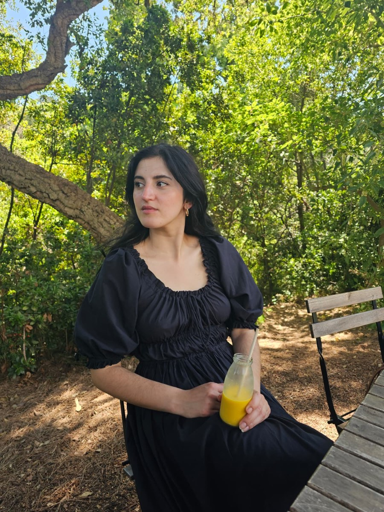

About me
Hi, I’m Paz, Paz means peace in Spanish.
I was born and raised in Patagonia, Chile, and have been living in beautiful Geneva, Switzerland since 2016. My path has always been shaped by creativity, textiles, and a love for making things with my hands. I learned to weave from a young age, growing up in a culture where textile traditions are deeply rooted, and that connection has stayed with me ever since.
I’m a self-taught sewist who discovered sewing in 2023. What began as simple curiosity quickly became a lifelong passion, and today it’s hard to find me not thinking about my next project. Alongside sewing, I work in museums, where my background in art and cultural heritage continues to inspire the way I see craftsmanship and the stories objects can carry.
I believe sewing is about much more than making clothes. It’s a way of slowing down, expressing yourself, valuing skills, and choosing a more thoughtful relationship with fashion. Whether that’s mending, sewing from thrifted fabrics, or creating garments you’ll treasure for years, I hope to share the joy and confidence that handmade clothing has brought into my own life.
I pass this joy of sewing, the passion for upcycling and the knowledge of the craft I have learnt on to other people through professional workshops and the Geneva Sewing Club.
I’m so happy you’re here, and I can’t wait to sew with you.
Follow my work on Instagram @pazmadeit
